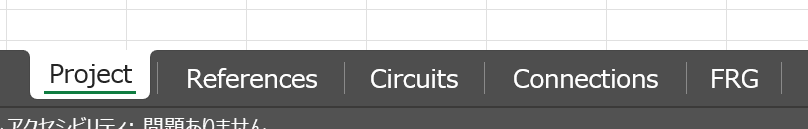
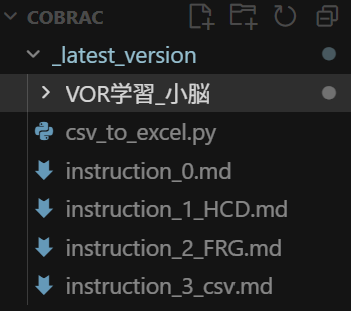
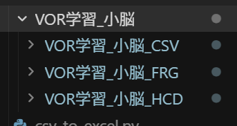
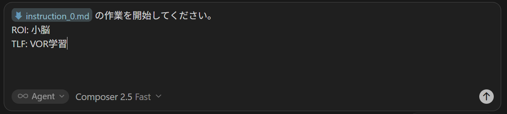

CoBRAC ユーザーガイド
1. はじめに
CoBRAC とは
CoBRAC（Collaborative Brain Reference Architecture Compiler）は、特定の脳領域（ROI）が実行する計算機能（TLF）について、神経科学的知見に基づき情報処理を構造化して記述するワークフローです。最終成果物は BRA（Brain Reference Architecture）データであり、拡張子 .bra.xlsx の Excel ファイルとして出力されます。
図 1-1 — CoBRAC 全体フロー
最終成果物 (.bra.xlsx)
Excel ファイルには次の 5 シートが含まれます。
| シート名 | 内容 |
|---|---|
| Project | プロジェクトメタデータ（Contributor, Project ID 等） |
| References | 使用文献一覧 |
| Circuits | Uniform Circuit（UC）定義 |
| Connections | UC 間の Connection |
| FRG | Function Realization Graph と UC の統合データ |
完成した .bra.xlsx を Excel で開き、下部の 5 シートタブ（Project / References / Circuits / Connections / FRG）がすべて見える状態でキャプチャしてください。

本ガイドの読み方
- 初めての方: 第 2〜4 章で概念と流れを把握
- 作業開始: 第 5 章以降を Phase 順に実行
- 詳細な記述ルール: 各 Phase で参照する
instruction_*.mdを AI エージェントに読ませる - 提出前: 第 11 章のチェックリストで確認
2. CoBRAC の基本概念
| 用語 | 説明 |
|---|---|
| TLF (Top Level Function) | 記述対象の計算機能（例: VOR 学習、空間ナビゲーション） |
| ROI (Region of Interest) | TLF が実現される脳領域（例: 小脳、海馬） |
| UC (Uniform Circuit) | HCD の基本単位（神経集団）。※「Circuit」は独自用法で、シナプス回路とは無関係 |
| BIF (Brain Information Flow) | 解剖学的投射に基づく接続の根拠データ |
| Connection | BIF に基づく UC 間の情報の受け渡し |
| Interface | UC の入出力関係。形式: ([出力], ...) = UC名([入力], ...) |
| Output Semantics | UC がコードする情報の意味 |
| GN (Group Node) | FRG の中間ノード。TLF の部分機能を表す |
| HCD | Hypothetical Component Graph — UC と Connection による情報処理グラフ |
| FRG | Function Realization Graph — TLF を階層分解し UC に接地するグラフ |
HCD — 「誰が誰につながるか」
FRG — 「機能がどう分解され UC に接地するか」
図 2-1 — HCD と FRG の対比（同じ UC が両方に登場）
Interface 記法の例
図 2-2 — UC-B は UC-F, UC-G, UC-I を入力とし、UC-E と UC-H へ出力する
3. 事前準備
必要なソフトウェア
- Python 3.x — CSV → xlsx 変換用
- pandas, openpyxl —
pip install -r requirements.txt - AI エージェント — Cursor, Claude Code, Codex 等（後述）
- Web ブラウザ — 文献調査用
- （任意）draw.io — HCD 図の可視化
リポジトリ構成（_latest_version）
_latest_version/
├── instruction_0.md # フォルダ作成
├── instruction_1_HCD.md # HCD 作成（8 ステップ）
├── instruction_2_FRG.md # FRG 作成（6 ステップ）
├── instruction_3_csv.md # CSV 作成
├── csv_to_excel.py # xlsx 生成
└── {ProjectName}/ # 各プロジェクトエクスプローラーまたは IDE のファイルツリーで _latest_version フォルダを表示。instruction ファイルが見える状態。

作業開始前に決める情報
- Contributor — 作成者名（英語）
- Project ID — プロジェクト名（英語、TLF/ROI がわかる ID）
- TLF と ROI — 記述対象の機能と脳領域
4. 全体ワークフロー
instruction_0.md— プロジェクトフォルダ作成instruction_1_HCD.md— HCD 作成instruction_2_FRG.md— FRG 作成instruction_3_csv.md— CSV 作成csv_to_excel.py— .bra.xlsx 生成
{ProjectName}/
├── {ProjectName}_HCD/ ← HCD 成果物（8 md ファイル）
├── {ProjectName}_FRG/ ← FRG 成果物（5 md ファイル）
└── {ProjectName}_CSV/ ← 5 CSV + 出力 xlsx- instruction_0
- フォルダ作成
- 1_Thinking … 8_diagram
- 3_UC, 4_Connection
- 1_初期分解 … 5_レポート
- 3_最終FRG
- 5 CSV ファイル
- csv_to_excel.py
- .bra.xlsx
図 4-1 — フェーズ別タイムライン
完成したプロジェクトフォルダ（{ProjectName}_HCD, _FRG, _CSV サブフォルダと主要ファイル）をエクスプローラーで表示。

| フェーズ | 入力 | 出力 |
|---|---|---|
| 0 | TLF, ROI | 3 サブフォルダ |
| 1 HCD | TLF, ROI, 文献 | 8 md ファイル |
| 2 FRG | TLF, HCD の UC | 5 md ファイル |
| 3 CSV | HCD + FRG md | 5 CSV |
| 4 xlsx | 5 CSV | .bra.xlsx |
5. Phase 0 — プロジェクト開始
Project ID の命名
- 英語で、TLF や ROI の内容がわかる ID（例:
Cerebellum-VOR-Learning） - スペース不可。Kebab-case 推奨
AI エージェントへの依頼例
instruction_0.md に従い、Project ID: Cerebellum-VOR-Learning、
ROI: 小脳（フロキュラス）、TLF: VOR 学習 で
プロジェクトフォルダを作成してください。使用中の AI エージェント（Cursor / Claude Code / Codex 等）で instruction_0.md を参照し、ROI・TLF を指定してフォルダ作成を依頼しているチャット画面。

6. Phase 1 — HCD の作成
詳細な記述ルールは instruction_1_HCD.md を参照してください。本章では各ステップの概要のみ示します。
| ステップ | 成果物 | 要点 |
|---|---|---|
| 1 | 1_Thinking.md | ROI/TLF の妥当性検証、ROI 入出力整理 |
| 2 | 2_BIF.md | 神経接続の文献調査、参考文献リスト |
| 3 | 3_UC.md | UC 定義（Kebab-case、ROI 内外の区別） |
| 4 | 4_Connection.md + 3_UC.md | Connection 定義、Interface 追加 |
| 5 | 3_UC.md | Output Semantics |
| 6 | 3_UC.md | Requirement / Capability / Mechanism / Implementation ※詳細は instruction 参照 |
| 7 | 5_Verification.md | 整合性検証 |
| 8 | 6_FinalPaper.md 等 | 報告・解説・Mermaid 図 |
instruction_1_HCD.md の「ステップ6」を AI エージェントに読ませ、そこに従って作成してください。
注意点
- md 内の UC 名はバッククォート（`）で囲む
- ROI 外 UC はコメントに
noROI(input)/noROI(output) - Connection と Interface が一致していること
- すべての Connection に文献引用があること
noROI(input) UC
情報処理グラフ
noROI(output) UC
図 6-2 — HCD における情報フロー（ROI 入力 → 内部処理 → ROI 出力）
HCD 構造図（8_diagram.md のイメージ）
図 6-3 — HCD 図の色分け凡例（実際の図は 8_diagram.md の Mermaid から draw.io 等で生成）
7. Phase 2 — FRG の作成
詳細は instruction_2_FRG.md を参照。HCD で定義した ROI 内 UC のみを使用します。
| ステップ | 成果物 | 要点 |
|---|---|---|
| 1 | 1_初期分解結果.md | TLF の機能分解（UC 紐づけはまだしない） |
| 2 | 2_最適化FRG.md | 冗長 GN のマージ |
| 3 | 3_最終FRG.md | UC 紐づけ、Interface 追加 |
| 4 | 4_機能詳細.md | TLF/GN の Requirement 等 ※詳細は instruction 参照 |
| 5 | 5_FRG作成レポート.md | 判断根拠の記録 |
- 各 GN は 複数の UC に分解される
- 1 つの GN に接続する UC は 最大 2 つ
- 1 つの UC に接続する GN は 最大 2 つ
- 違反時はステップ 1 に戻り、TLF の分解を見直す
図 7-1 — FRG 階層（TLF → GN → UC）
→ ステップ 1 に戻り分解を見直す
図 7-2 — GN–UC 接続数制約
GN 命名: R. + Kebab-case。UC 参照: U. + Circuit ID。
8. Phase 3 — CSV ファイルの作成
詳細は instruction_3_csv.md を参照。
前提ファイル
- HCD:
2_BIF.md,3_UC.md,4_Connection.md - FRG:
3_最終FRG.md,4_機能詳細.md
| CSV | 主なデータソース |
|---|---|
| Project.csv | テンプレート + メタデータ |
| References.csv | 2_BIF.md, 4_Connection.md |
| Circuits.csv | 3_UC.md |
| Connections.csv | 4_Connection.md |
| FRG.csv | FRG + HCD 統合 |
図 8-1 — md ファイルと CSV の対応
- CSV の内容は 英語 で記述
- md 内のバッククォート（`）は除去
- FRG.csv の UC Node ID には
U.プレフィックスを付加
9. Phase 4 — .bra.xlsx の生成
_latest_version フォルダで Python スクリプトを実行します。
cd _latest_version
python csv_to_excel.py対話入力: Contributor と Project ID
出力先: {ProjectName}/{ProjectName}_CSV/{ProjectID}.bra.xlsx
スクリプトが行う加工（概要）
- Circuits — 列の挿入（Sub-Circuits, Uniform=TRUE 等）、Contributor / Project ID 追加
- Connections — relation 列、Notation 列等の追加
- FRG — Capability と Mechanism を
Capability&Mechanism列に結合
10. AI エージェントの使い方
instruction_*.md をエージェントに読ませ、指示に従った作業を依頼してください。
基本的な依頼の仕方
- CoBRAC リポジトリ（
_latest_version）をエージェントの作業ディレクトリとして開く - 該当 Phase の instruction ファイルを明示的に参照させる
- TLF, ROI, Project ID 等のパラメータを毎回明示する
プロンプト例
Phase 1 開始
instruction_1_HCD.md に従い、ROI: 海馬、TLF: 空間ナビゲーション
で HCD 作成を開始してください。Project フォルダは既に作成済みです。HCD 完了 → FRG 開始
HCD 作業が完了しました。instruction_2_FRG.md に従い FRG 作成を
開始してください。TLF と UC は HCD の成果物を使用してください。FRG 完了 → CSV 作成
FRG 作業が完了しました。instruction_3_csv.md に従い
5 つの CSV ファイルを作成してください。人間が必ず確認すべき点
- 文献引用の正確性（DOI, 著者年）
- ROI/TLF の神経科学的妥当性
- UC 命名規則、GN–UC 制約
- Connection と Interface の整合
11. 品質チェックリスト
HCD
- ROI_Input から ROI_Output への情報経路が成立している
- すべての Connection に Reference ID がある
- Connection と Interface が一致している
- UC 名は Kebab-case、md 内はバッククォートで囲まれている
- ROI 外 UC に noROI コメントがある
- 5_Verification.md で検証済み
- 8_diagram.md の Mermaid 図が作成されている
FRG
- ROI 内 UC のみ使用している
- 各 GN は複数 UC に分解されている
- GN–UC 接続数制約（各最大 2）を満たしている
- TLF の Interface が noROI 入出力と整合している
- 4_機能詳細.md が揃っている
CSV / xlsx
- 5 CSV がすべて英語で記述されている
- References.csv に重複・欠落がない
- FRG.csv の Node ID 形式が正しい（R.* / U.*）
- .bra.xlsx に 5 シートがある
- Contributor / Project ID が Circuits, Connections に反映されている
12. トラブルシューティング
| 症状 | 原因と対処 |
|---|---|
CSVフォルダが見つかりません | Project ID がフォルダ名と一致しているか確認。パスは {ProjectID}/{ProjectID}_CSV/ |
Project.csv が見つかりません | Phase 3（CSV 作成）が未完了 |
| FRG で GN–UC 制約違反 | instruction_2 のステップ 1 に戻り TLF 分解を細分化 |
| Connection と Interface 不整合 | 5_Verification.md の検証を再実施し 3_UC.md / 4_Connection.md を修正 |
ModuleNotFoundError: pandas | pip install -r requirements.txt を再実行 |
| AI 出力の品質が低い | より高性能なモデルに変更、instruction を再参照させる、人間が段階的にレビュー |
付録
A. 成果物ファイル一覧
| ファイル | フェーズ | 必須 |
|---|---|---|
| 1_Thinking.md | HCD | ○ |
| 2_BIF.md | HCD | ○ |
| 3_UC.md | HCD | ○ |
| 4_Connection.md | HCD | ○ |
| 5_Verification.md | HCD | ○ |
| 6_FinalPaper.md | HCD | ○ |
| 7_EasyToUnderstand.md | HCD | ○ |
| 8_diagram.md | HCD | ○ |
| 1_初期分解結果.md | FRG | ○ |
| 2_最適化FRG.md | FRG | ○ |
| 3_最終FRG.md | FRG | ○ |
| 4_機能詳細.md | FRG | ○ |
| 5_FRG作成レポート.md | FRG | ○ |
| 5 × CSV | CSV | ○ |
| {ProjectID}.bra.xlsx | xlsx | ○ |
B. 命名規則
- UC — Kebab-case、スペース不可（例:
flocculus-purkinje） - GN —
R.+ Kebab-case（例:R.error-computation） - FRG.csv の UC —
U.+ Circuit ID